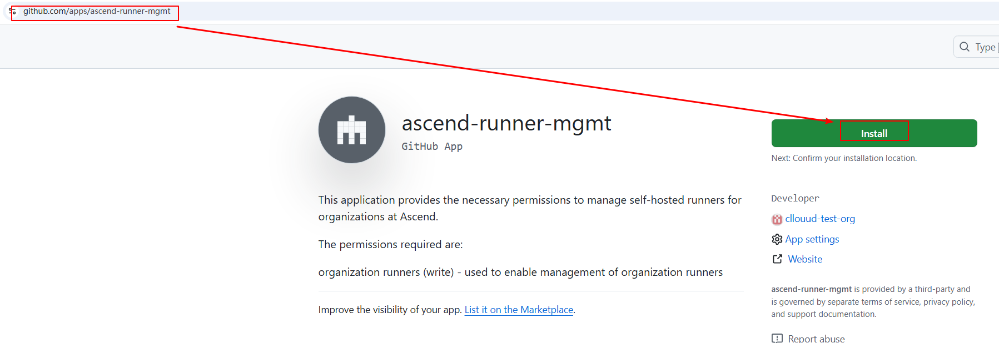
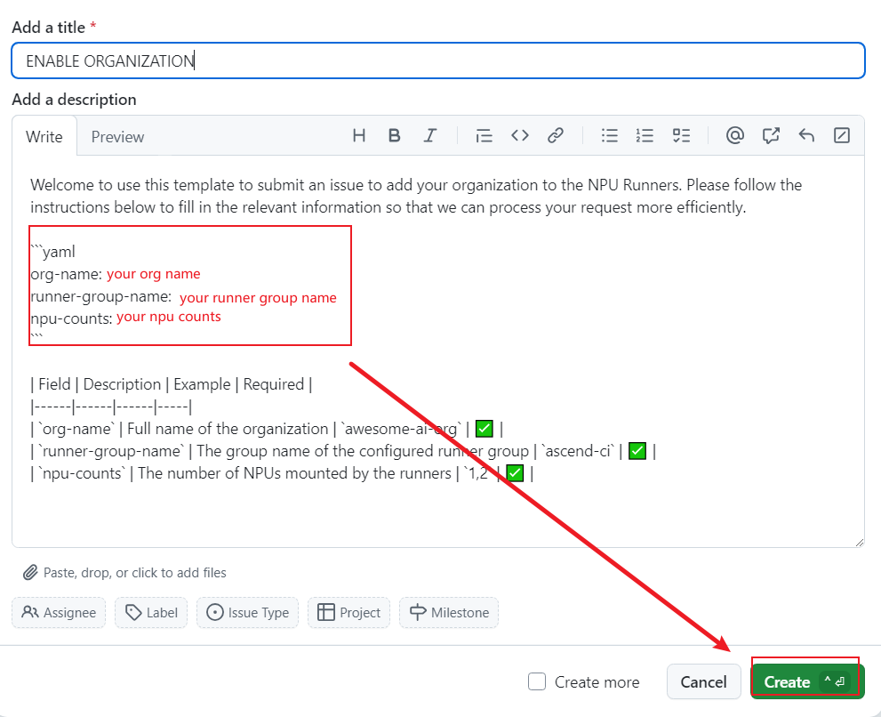
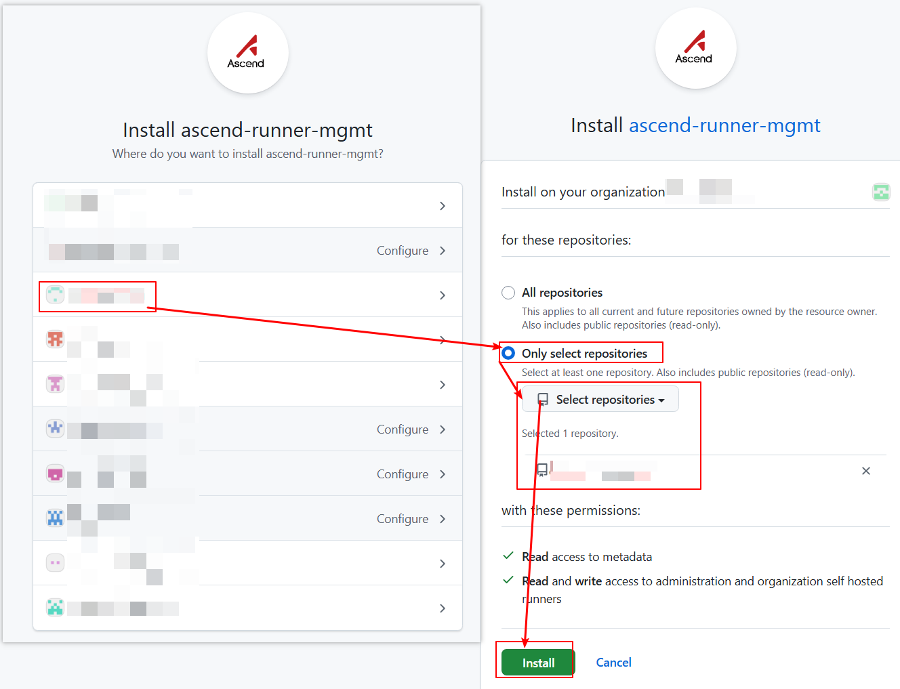
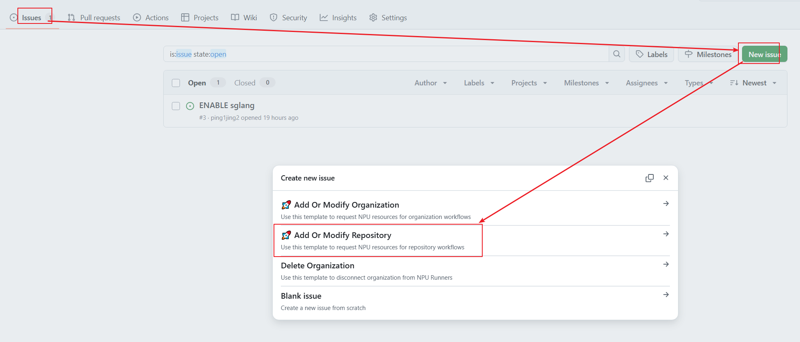
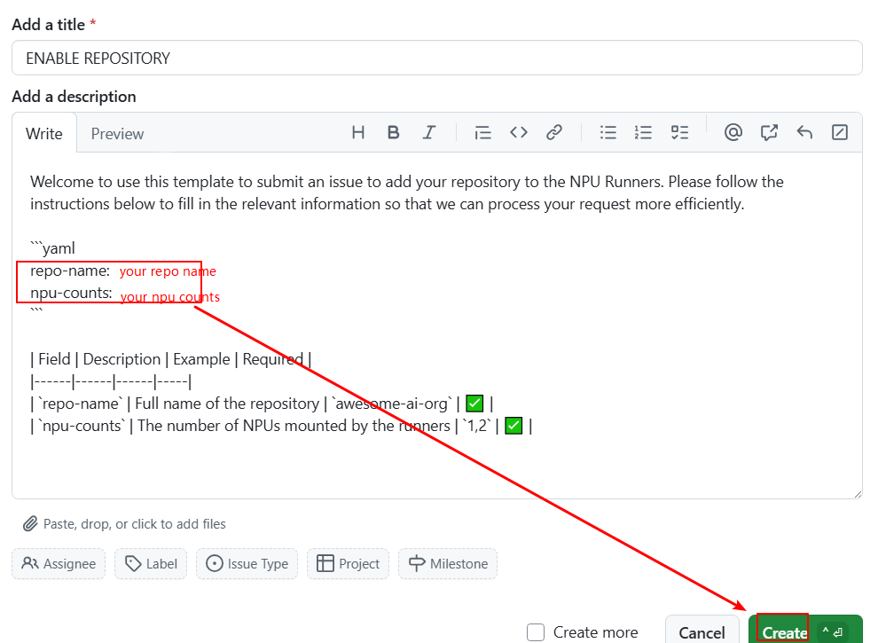

用户手册¶
我们基于ARC实现 GitHub Action 任务在昇腾集群节点上执行。
我们按照安装范围(组织/仓库)和接入权限(GitHub App/PAT)分别介绍安装方式。您可以选择其中一种种方式安装，也可以搭配多种方式混合安装。 如果您在安装/使用过程中有任何问题，请提出discussion。
| 组织 | 仓库 | |
|---|---|---|
| GitHub App | 安装方式 | 安装方式 |
| PAT | 安装方式 | 安装方式 |
通过 GitHub App 将 runner 安装到组织¶
准备工作¶
需要具备组织的管理权限。
可选：安装 runner group¶
被安装到组织的 runner 由 runner group 管理。 runner group 有3个配置选项以控制仓库的 workflow 是否可以使用 runner。 1. 仓库：选择组织下所有仓库 / 选择指定仓库。 2. 仓库访问权限：private / public。 3. workflow: 选择所有 workflow / 选择指定 workflow。 同时满足3个配置的仓库可以使用组织的 runner。
如果没有指定 runner group，则使用默认 runner group，其默认配置是： 1. 仓库：选择所有仓库。 2. 仓库访问权限： private。 3. workflow: 选择所有 workflow。
您可以使用并更改默认 runner group 来管理 runner，跳过新建 runner group。 如果默认 runner group 已经管理 runner 并且其权限与新 runner 不同，您可以参考新建 runner group创建自定义 runner group 来管理 runner。
安装 GitHub App¶
浏览器访问apps/ascend-runner-mgmt并且点击Install。

选择组织，选择All repositories，点击Install。

提交申请激活组织¶
浏览器访问ascend-gha-runners/org-archive/issues并且依次点击New issue, Add Or Modify Organization选择模板。
 填写3个配置参数后点击
填写3个配置参数后点击Create。
org-name表示您的组织名称。
runner-group-name表示Runner group的名称，默认Default。
npu-counts表示NPU Runners挂载的NPU卡数量。

通过 GitHub App 将 runner 安装到仓库¶
准备工作¶
需要具备组织及仓库的管理权限。
安装 GitHub App¶
浏览器访问apps/ascend-runner-mgmt并且点击Install。
选择组织，选择Only select repositories，选择目标仓库，点击Install。

提交申请激活仓库¶
浏览器访问ascend-gha-runners/org-archive/issues并且依次点击New issue, Add Or Modify Repository选择模板。

填写2个配置参数后点击Create。
repo-name表示您的仓库名称。
npu-counts表示NPU Runners挂载的NPU卡数量。

通过 PAT 将 runner 安装到组织¶
准备工作¶
需要具备组织的管理权限。
可选:安装-runner-group¶
创建 token¶
根据GitHub Docs创建token。
scopes 选择admin:org。
请注意token到期时间，token到期之后仓库不显示 Runner scale set，无法执行 workflow，需要重新生成有效token。

提交申请激活组织¶
考虑到token保密需求，申请方式是向gouzhonglin@huawei.com发送邮件。
邮件主题模板：Request Ascend NPU Runners
邮件内容模板：
repo: https://github.com/my-org/
runner_group: ascend-ci
token: ghp_xxx
expire-at: 30days
npu_counts: 1, 2, 4
通过 PAT 将 runner 安装到仓库¶
准备工作¶
需要具备仓库的管理权限。
创建 token¶
根据GitHub Docs创建token。
scopes 选择repo。
请注意token到期时间，token到期之后仓库不显示 Runner scale set，无法执行 workflow，需要重新生成有效token。

提交申请激活仓库¶
考虑到token保密需求，申请方式是向gouzhonglin@huawei.com发送邮件。
邮件主题模板：Request Ascend NPU Runners
邮件内容模板：
repo: https://github.com/my-org/my-repo
token: ghp_xxx
expire-at: 30days
npu_counts: 1, 2, 4
使用¶
Runners命名规范¶
NPU Runners由以下部分组成：
linux-amd64-npu-x
^ ^ ^ ^
| | | |
| | | Number of NPUs Available
| | NPU Designator
| Architecture
Operating System
查看 Runner¶
无论是将 runner 安装到仓库还是组织，启动 runner 的都是仓库里的workflow。进入您的仓库，依次点击组织的Settings, Actions, Runner。Runner scale set目录下是配置到仓库的 runner。Shared with this repository目录下是仓库可以访问的组织 runner。Status为Online表示可以使用。

在workflow中使用NPU Runners¶
如果想在 job 中使用昇腾芯片，需要指定container.image字段，否则job不会调用NPU资源。
以下例子展示Github Action workflow如何使用NPU Runners。
name: Test NPU Runner
on:
workflow_dispatch:
jobs:
job_0:
runs-on: linux-arm64-npu-1
container:
image: ascendai/cann:latest
steps:
- name: Show NPU info
run: |
npu-smi info